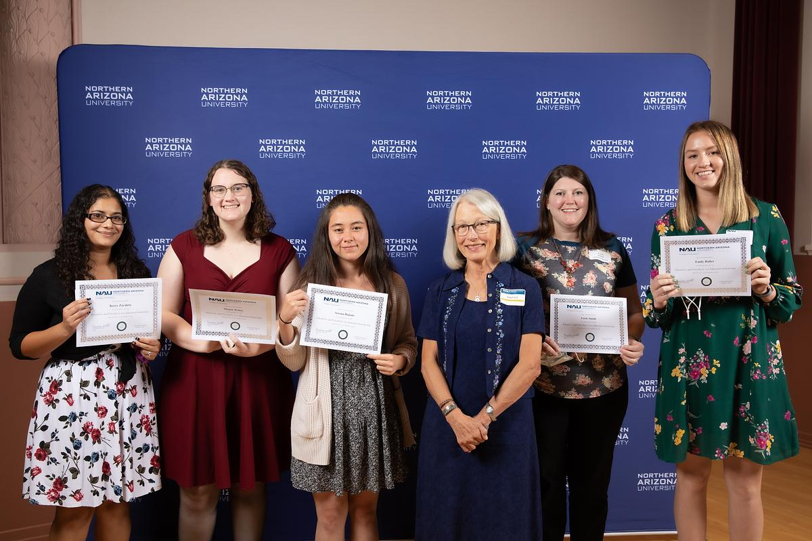
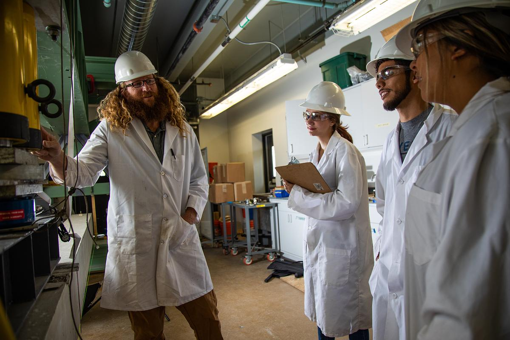

Earn Your Master’s
on a Funded Scholarship
Become an NAU Intel-SRC CHIPS Scholar, a funded MS seat at NAU’s Steve Sanghi College of Engineering, with cross-campus access at the University of Arizona and research backed by Intel and SRC.
Mentorship 35+ instruments plus Intel/SRC access


A Funded MS Seat at NAU’s Sanghi College
If you’re heading into a Master’s in Mechanical, Electrical & Computer, or Optical Engineering, the NAU Intel-SRC CHIPS Scholarship is built for you. NAU’s Steve Sanghi College of Engineering hosts the program, with the University of Arizona as collaborating campus and Intel and SRC backing the research. Selected scholars receive a $15,000 yearly stipend, professional development support, and a guaranteed seat in the launching cohort.
As an NAU Intel-SRC Scholar you work shoulder-to-shoulder with faculty in the MPaCT Lab, 35+ instruments for semiconductor processing, lithography, laser work, and metrology, and gain bidirectional access to UofA’s photonics cleanroom and optics labs. Your Master’s thesis or industry-aligned project is scoped against real semiconductor manufacturing priorities, not classroom exercises. NAU is a Carnegie R1 Hispanic-Serving Institution with roughly 60% first-generation enrollment, accelerated BS⇒MS pathways, and an established TSMC apprenticeship pipeline. The Intel and SRC partnership extends that record into advanced packaging, manufacturing process metrology, and co-packaged optics, the three areas Intel has flagged as priorities for its Arizona operations.

Why Intel-SRC CHIPS at NAU + UofA
Funded research training built around Intel’s Arizona workforce priorities and SRC program engagement, with cross-campus access from day one.
Industry-Aligned Research from Day One
Every Intel-SRC Scholar completes a thesis or independent project scoped with faculty, Intel liaisons, and SRC program expectations against semiconductor manufacturing priorities including advanced packaging, metrology, materials reliability, or co-packaged optics. At least one Intel facility visit per year and active internship support in Manufacturing & Process Development, Silicon Hardware Engineering, and Semiconductor Research.
Hands-On Lab Access
Hands-on time in NAU’s MPaCT Lab and UofA’s photonics cleanroom, ITL, and FASTlab for lithography, laser processing, metrology, optical alignment, and packaging assembly.
Faculty + Intel/SRC Mentorship
A primary faculty advisor and a cross-institutional co-advisor, an Individual Development Plan revisited each term, and direct contact with Intel champions and SRC review expectations across the four pillars.
Cross-Campus Collaboration
Bidirectional facility access between NAU and UofA, with one supervised research visit per year to the partner campus and shared cohort activities such as SEMICON West and AZ Tech Week.
A Multi-Institution Alliance
Intel and the Semiconductor Research Corporation (SRC) co-sponsor the program; NAU’s Steve Sanghi College of Engineering leads with UofA’s Wyant College of Optical Sciences and the Center for Semiconductor Manufacturing as co-collaborators, a structure built specifically around Intel’s Arizona fab and R&D needs.
Where Scholars Will Work
Every Intel-SRC Scholar focuses on one of four research pillars aligned with Intel’s Microelectronics and Advanced Packaging Technologies (MAPT) roadmap. Two cohort tracks keep the work degree-aligned: Manufacturing & Metrology (Mechanical Engineering), and Electronics, CPO & Hardware (ECE and Optical Engineering).

Are You Eligible?
Take 30 seconds to check fit. If most of these apply to you, you should apply; the NAU program coordinator can confirm the rest after you register your interest.
Open to incoming and currently enrolled MS students at NAU (or transferring in for AY 2026–27 and later cohorts).
- Master’s candidate, onboard or incoming for Fall 2026 / Spring 2027 / Fall 2027
- Major in Mechanical Engineering, Electrical & Computer Engineering, or Optical Engineering
- US Citizen, US National, or Permanent Resident
- Maintain ≥ 3.0 GPA and good academic standing through the program
- FAFSA-verified financial need is prioritized in selection
Direct student support and access: what you receive as an NAU Intel-SRC Scholar.
- $15,000 / year stipend paid across the two-year MS program
- $500 / year professional development funds
- Travel funds for at least one Intel facility visit per year and cross-campus research visits
- Hands-on access to NAU’s MPaCT Lab (35+ instruments) and UofA’s photonics labs
- Faculty advisor + cross-institutional co-advisor + Intel champion mentor + SRC program engagement
- Internship support in semiconductor research and manufacturing roles
A two-year MS, with cohort entry windows for the next three semesters.
- Interest open now; register and an NAU coordinator will follow up
- Cohort entry: Fall 2026, Spring 2027, or Fall 2027
- Two-year MS with thesis or industry-aligned project
- One supervised research visit per year to the partner campus
- At least one Intel facility visit per year
- Two technical reviews per semester with NAU faculty and Intel mentors
Not sure if you qualify? Apply anyway. The NAU program coordinator can review your background and let you know whether you fit the current cohort or a future one; many scholars start with a "maybe" and discover the seat is theirs.
Tell Us About You
Drop your details below and an NAU program coordinator will reach out, usually within a week, with the next steps for the cohort window you pick.
Ready to Be an NAU Intel-SRC Scholar?
Cohort seats are open for Fall 2026, Spring 2027, and Fall 2027 entries. Register your interest above and an NAU program coordinator will follow up with the full application packet and your next steps, usually within a week.